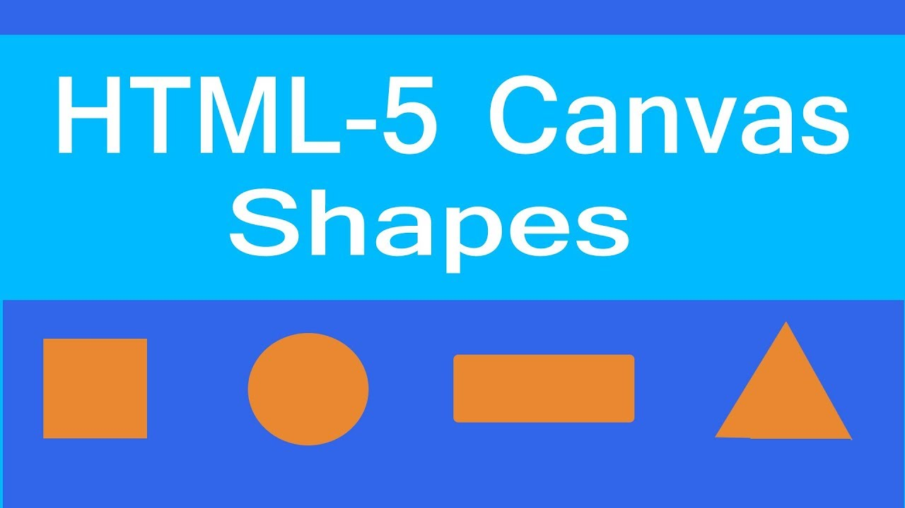
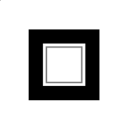

CANVAS API
History
First introduced in WebKit by Apple for the macOS Dashboard, canvas has since been implemented in browsers. Today, all major browsers support it.
Canvas Element
const canvas = document.querySelector('#canvas');
const width = canvas.width;// 300
const height = canvas.height;// 150`
The rendering context
const canvas = document.querySelector('#canvas');
const ctx = canvas.getContext("2d");
Drawing shapes with canvas
The grid

Drawing rectangles
ctx.fillRect(x, y, width, height);
ctx.strokeRect(x, y, width, height);
ctx.clearRect(x, y, width, height);

Drawing paths
beginPath()
closePath()
stroke()
fill()